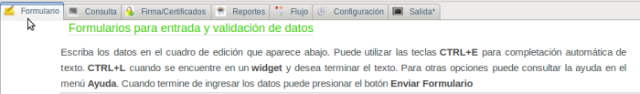
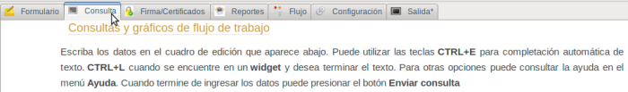
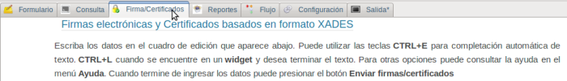
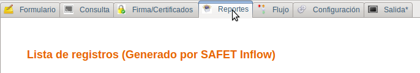
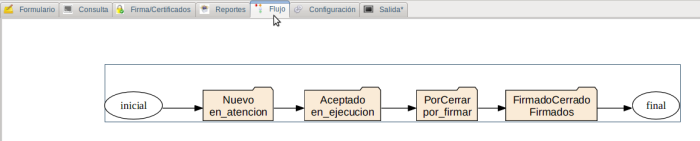
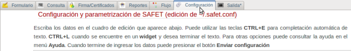
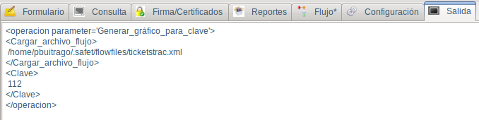

-
Pestaña Módulo Agregar/modificar información esta pestaña permite acceder al módulo donde se gestiona los ticket del sistema trac

Figura S4.2-1, Pestaña módulo Agregar/modificar documento
-
Pestaña Módulo Realizar Consulta esta pestaña permite acceder al módulo donde se realizan diferentes consultas del flujo de trabajo

Figura S4.2-2, Pestaña módulo Agregar/modificar documento
-
Pestaña Módulo Firmar/Verificar documentos esta pestaña permite acceder al módulo donde se verifica y realiza la firma electrónica

Figura S4.2-3, Pestaña módulo Firmar/Verificar documentos
-
Pestaña Módulo de Reporte esta pestaña permite acceder al módulo donde se muestra el reportes de la consulta realizada.

Figura S4.2-4, Pestaña módulo Reporte
-
Pestaña Módulo Flujo de trabajo esta pestaña permite acceder al módulo donde muestra o dibuja los flujos de trabajos consultados

Figura S4.2-5, Pestaña módulo Flujo de trabajo
-
Pestaña Módulo Configuración esta pestaña permite acceder al módulo de configuración de la aplicación

Figura S4.2-6, Pestaña módulo Configuración
-
Pestaña Módulo Salida esta pestaña permite acceder al módulo de salida donde se muestra la solicitud enviada, como ejemplo se muestra en la imagen la solicitud de consultar en que estado del flujo de trabajo se encuentra un ticket con un determinado número de identificación (id)

Figura S4.2-7, Pestaña módulo Salida